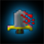

Version 0.7!
A new version has been released, featuring new player models and
some updated graphics. A few balance fixes have also been added
and minor improvements have been made to the patcher and lobby.
The warrior jumpstrike attack is still broken, a fix is soon
to be awaited.
Players should redownload the patcher from the above link.
//chili. - 2013-11-15
New Version
The version 6 has gone live sucessfully. Many bugfixes and improvements
have been incorporated. In this latest release the Patcher was updated,
it will now be more responsive. Small patches are planned for the lobby,
the lobby should soon send multiple attempts for connection and also
provide more feedback.
Big changes are planned for the game, a gamemode with scoring and round
winners. Mobs and bosses should be implemented, Player AI's should be
refined and tuned to scale better. Player AI's should also make use of
attributes, to make them really strong. The warrior AI is having a huge
nerf while we're buffing the thief AI and leaving the mage as is.
Players should redownload the patcher from the above link.
//chili. - 2013-09-01
More Shiny Stuff
More shiny stuff have been added. Arts such as a brand new playable
map, 15 fresh graphic effects. Player classes have been added, including
the Mage, Thief and Warrior. Each wielding the power of 5 unique abilities
and 3 basic abilities (basic attack, heal & haste). A MAP Editor was added
to the Toolset. Major changes and bugfixes including multiplayer support,
optimizations and Unicode support.
This version will come live week 20, The BETA Test will also begin
after this release has gone live, labeled as 'Beta 0.6', "EnterTheDungeon".
//chili. - 2013-05-14
Major Changes
Major changes has been committed. The suite was updated with
new tools: Game Lobby, Patcher & a KeyGen. Major changes to
game art, large engine improvements, art assets updated.
A Bandwidth of 3KB/s upstream is recommended (8 player).
A Bandwidth of 30KB/s downstream is recommended (8 player).
A Processor of 650Mhz Dual or 925Mhz Single
Integrated Graphics With Support for any of the
following, DirectX7, DX8, DX9, DX10, DX11 or OpenGL 2.0
The current release suffers from delays on network
play, this is intended UNTIL the post-BETA patch.
The delays will be disabled by flow reverse. ;-)
//chili. - 2013-05-08
First Version
The first version compiled for win32. All is running well.
This version is released as 'Pre-ALPHA 0.5', codename "JustGrass".
//chili. - 2013-04-30
Website Launched
The website was launched. - 2013-04-24
//chili.